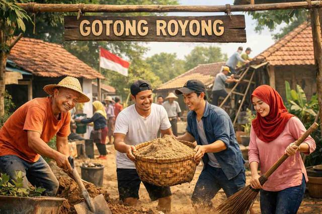
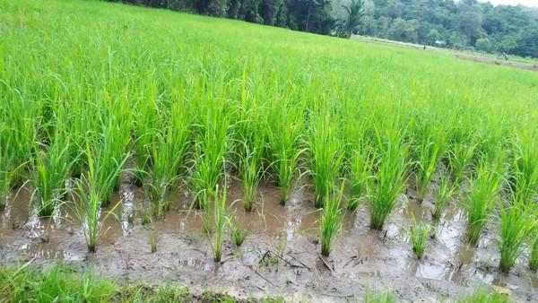
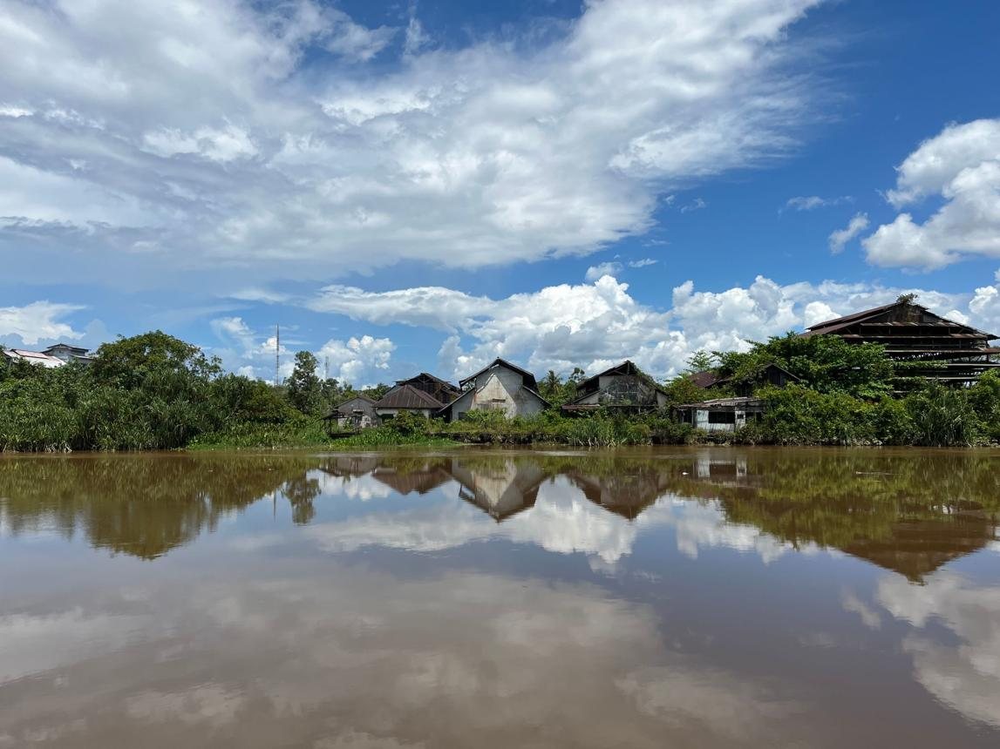
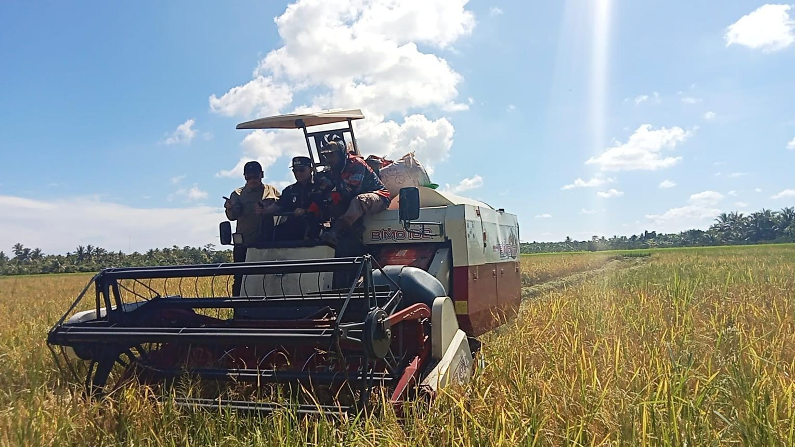
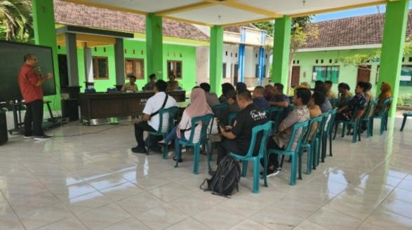

28 Agustus 2026
Gotong Royong Membersihkan Parit Desa
Warga bersama-sama menjaga kebersihan lingkungan dan kelancaran aliran air di sekitar permukiman.
Kecamatan Semparuk · Kabupaten Sambas
Desa yang tumbuh bersama hamparan persawahan, parit, dan sungai sebagai bagian dari kehidupan masyarakat.
Perkiraan Penduduk
Mata Pencaharian Utama
Potensi Alam Desa
Kalimantan Barat
Keunggulan yang menjadi identitas dan kekuatan desa.

Hamparan sawah menjadi sumber penghidupan mayoritas masyarakat Desa Semparuk dan menjadi identitas utama desa.

Parit dan sungai berperan penting sebagai aliran air, penunjang pertanian, serta bagian dari lingkungan desa.
Informasi dan kegiatan masyarakat Desa Semparuk.

Warga bersama-sama menjaga kebersihan lingkungan dan kelancaran aliran air di sekitar permukiman.

Musim panen menjadi momen penting bagi para petani sebagai hasil kerja keras selama masa tanam.

Pembahasan program pembangunan desa dan peningkatan pelayanan kepada masyarakat.